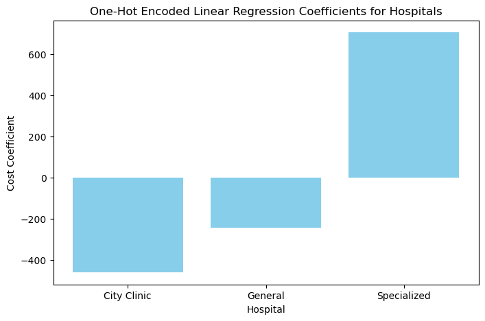
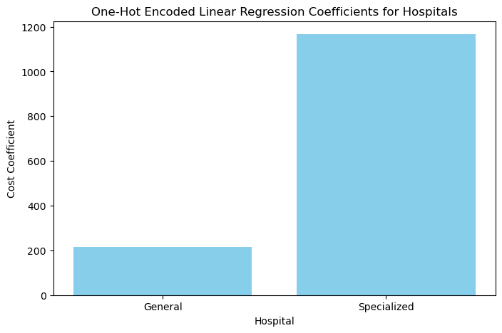
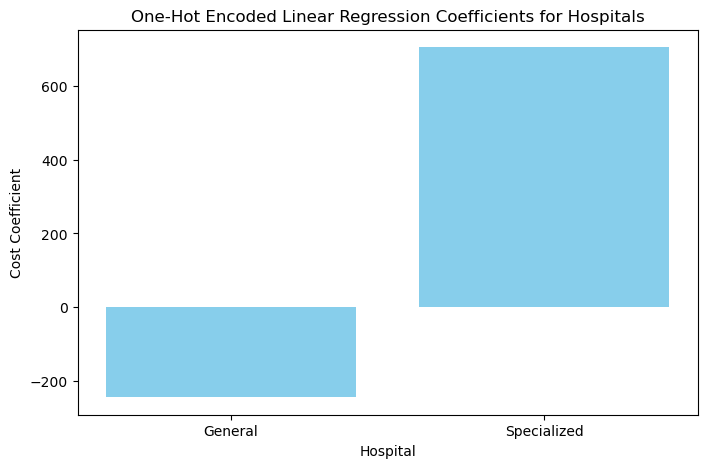

Variables categóricas#
Las variables categóricas son un concepto fundamental en ciencia de datos: representan etiquetas o categorías discretas, como “País”, “Estación del año” o “Diagnóstico”. A diferencia de las variables numéricas, no tienen un orden o distancia natural entre valores (salvo que se especifique lo contrario, como en variables ordinales). Elegir una codificación adecuada es clave para que los modelos interpreten estas variables correctamente y para evitar introducir relaciones u jerarquías no deseadas.
El problema de codificar con enteros simples#
Una solución ingenua consiste en asignar enteros a cada categoría.
Por ejemplo, en un conjunto con información categórica como “Género”, “Grupo sanguíneo {A, B, AB, O}” o “Tipo de tratamiento”, asignar {A=0, B=1, AB=2, O=3} parece cómodo.
Sin embargo, esta codificación impone un orden artificial (0 < 1 < 2 < 3) y sugiere distancias lineales entre categorías que no existen. Muchos modelos (p. ej., regresión lineal, SVM lineales) podrían interpretar estos números como magnitudes u ordenaciones reales y extraer conclusiones erróneas.
Show code cell source
import pandas as pd
# Example dataset with categorical data
data = {'Patient': ['A', 'B', 'C', 'D'],
'Blood_Type': ['A', 'B', 'AB', 'O']}
df_blood = pd.DataFrame(data)
# Simple integer encoding (problematic)
df_blood['Blood_Type_Encoded'] = df_blood['Blood_Type'].astype('category').cat.codes
display(df_blood)
| Patient | Blood_Type | Blood_Type_Encoded | |
|---|---|---|---|
| 0 | A | A | 0 |
| 1 | B | B | 2 |
| 2 | C | AB | 1 |
| 3 | D | O | 3 |
One‑Hot Encoding#
El one‑hot encoding soluciona este problema representando cada categoría con un vector binario: una columna por categoría; un valor 1 indica la presencia de la categoría y 0 en caso contrario. Esto evita introducir órdenes ficticios entre categorías.
Show code cell source
# One-Hot Encoding Example
df_onehot = pd.get_dummies(df_blood['Blood_Type'], prefix='Blood_Type')
display(df_onehot)
| Blood_Type_A | Blood_Type_AB | Blood_Type_B | Blood_Type_O | |
|---|---|---|---|---|
| 0 | True | False | False | False |
| 1 | False | False | True | False |
| 2 | False | True | False | False |
| 3 | False | False | False | True |
Un one‑hot crea columnas separadas para cada categoría (p. ej., hospital_General, hospital_Clinica, hospital_Especializado) con valores 0/1. Es simple y fácil de interpretar, pero utiliza un bit más de lo estrictamente necesario.
Si vemos que \(k-1\) de los bits son 0, entonces el último bit debe ser 1 porque la variable debe tomar uno de los \(k\) valores.
Matemáticamente, esta restricción puede escribirse como: “la suma de todos los bits debe ser igual a 1”.
Supongamos que queremos predecir el coste medio de tratamiento y tenemos una variable categórica con tres hospitales: “General Hospital”, “City Clinic” y “Specialized Center”. Con one‑hot, añadimos tres columnas binarias e incluimos un término independiente (bias). Cada coeficiente asociado a una columna indica la diferencia en el coste medio respecto a la referencia inducida por el intercepto.
Show code cell source
import pandas as pd
import numpy as np
import matplotlib.pyplot as plt
from sklearn import linear_model
Show code cell source
# Create a sample dataframe with treatment cost data from three hospitals
df = pd.DataFrame({
'Hospital': ['General', 'General', 'General', 'City Clinic', 'City Clinic', 'City Clinic', 'Specialized', 'Specialized', 'Specialized'],
'Treatment_Cost': [5000, 5200, 5100, 4800, 4900, 4950, 6000, 6050, 6100]
})
df
| Hospital | Treatment_Cost | |
|---|---|---|
| 0 | General | 5000 |
| 1 | General | 5200 |
| 2 | General | 5100 |
| 3 | City Clinic | 4800 |
| 4 | City Clinic | 4900 |
| 5 | City Clinic | 4950 |
| 6 | Specialized | 6000 |
| 7 | Specialized | 6050 |
| 8 | Specialized | 6100 |
Show code cell source
# One-hot encode the 'Hospital' column
one_hot_df = pd.get_dummies(df, prefix=['Hospital'])
one_hot_df
| Treatment_Cost | Hospital_City Clinic | Hospital_General | Hospital_Specialized | |
|---|---|---|---|---|
| 0 | 5000 | False | True | False |
| 1 | 5200 | False | True | False |
| 2 | 5100 | False | True | False |
| 3 | 4800 | True | False | False |
| 4 | 4900 | True | False | False |
| 5 | 4950 | True | False | False |
| 6 | 6000 | False | False | True |
| 7 | 6050 | False | False | True |
| 8 | 6100 | False | False | True |
# Define the predictor variables and target variable
X = one_hot_df[['Hospital_City Clinic', 'Hospital_General', 'Hospital_Specialized']]
y = one_hot_df['Treatment_Cost']
# Create and fit a linear regression model
lin_reg = linear_model.LinearRegression()
lin_reg.fit(X, y)
LinearRegression()In a Jupyter environment, please rerun this cell to show the HTML representation or trust the notebook.
On GitHub, the HTML representation is unable to render, please try loading this page with nbviewer.org.
LinearRegression()
Show code cell source
# Plotting the result
hospitals = ['City Clinic', 'General', 'Specialized']
coefficients = lin_reg.coef_
# Create a bar plot for the coefficients
plt.figure(figsize=(8, 5))
plt.bar(hospitals, coefficients, color='skyblue')
plt.xlabel('Hospital')
plt.ylabel('Cost Coefficient')
plt.title('One-Hot Encoded Linear Regression Coefficients for Hospitals')
plt.show()

# Get the model coefficients and intercept
print("Coefficients:", lin_reg.coef_)
print("Intercept:", lin_reg.intercept_)
Coefficients: [-461.11111111 -244.44444444 705.55555556]
Intercept: 5344.444444444444
Con one‑hot encoding, el término independiente representa el promedio global (media de todas las observaciones). El coeficiente de una categoría concreta cuantifica cuánto difiere el promedio de esa categoría del promedio global (manteniendo el resto constante).
df['Treatment_Cost'].mean()
5344.444444444444
Dummy Coding#
El problema del one‑hot es la multicolinealidad perfecta si se incluyen todas las columnas junto con el intercepto: la suma de las dummies es 1. El dummy coding es similar al one‑hot, pero elimina una categoría (categoría de referencia). Así se evita la colinealidad y se mantienen modelos bien definidos.
Show code cell source
# Dummy Encoding Example
df_dummy = pd.get_dummies(df_blood['Blood_Type'], drop_first=True, prefix='Blood_Type')
display(df_dummy)
| Blood_Type_AB | Blood_Type_B | Blood_Type_O | |
|---|---|---|---|
| 0 | False | False | False |
| 1 | False | True | False |
| 2 | True | False | False |
| 3 | False | False | True |
El resultado de modelar con dummy coding suele ser más interpretable que con one‑hot completo, porque los coeficientes se entienden respecto a una categoría de referencia.
Show code cell source
dummy_df = pd.get_dummies(df, prefix=['Hospital'], drop_first=True)
dummy_df
| Treatment_Cost | Hospital_General | Hospital_Specialized | |
|---|---|---|---|
| 0 | 5000 | True | False |
| 1 | 5200 | True | False |
| 2 | 5100 | True | False |
| 3 | 4800 | False | False |
| 4 | 4900 | False | False |
| 5 | 4950 | False | False |
| 6 | 6000 | False | True |
| 7 | 6050 | False | True |
| 8 | 6100 | False | True |
X = dummy_df[['Hospital_General', 'Hospital_Specialized']]
y = dummy_df['Treatment_Cost']
lin_reg.fit(X,y)
LinearRegression()In a Jupyter environment, please rerun this cell to show the HTML representation or trust the notebook.
On GitHub, the HTML representation is unable to render, please try loading this page with nbviewer.org.
LinearRegression()
Con dummy coding, el término independiente (bias) representa la media de la categoría de referencia (por ejemplo, City Clinic). El coeficiente de la \(i\)‑ésima categoría indica cuánto difiere su media de la media de la categoría de referencia.
# Get the model coefficients and intercept
print("Coefficients:", lin_reg.coef_)
print("Intercept:", lin_reg.intercept_)
Coefficients: [ 216.66666667 1166.66666667]
Intercept: 4883.333333333333
Show code cell source
# Plotting the result
hospitals = [ 'General', 'Specialized']
coefficients = lin_reg.coef_
# Create a bar plot for the coefficients
plt.figure(figsize=(8, 5))
plt.bar(hospitals, coefficients, color='skyblue')
plt.xlabel('Hospital')
plt.ylabel('Cost Coefficient')
plt.title('One-Hot Encoded Linear Regression Coefficients for Hospitals')
plt.show()

Effect Coding#
El effect coding (o contrast coding) es muy parecido al dummy coding, pero usa valores en {−1, 0, 1} y aplica una restricción de suma cero entre las categorías. En lugar de eliminar la columna de referencia, se codifica con el vector de todos −1. Al ajustar una regresión con variables codificadas por effect coding, los coeficientes reflejan desvíos respecto a la media global, y la suma de los efectos por categoría es cero.
Show code cell source
effect_df = dummy_df.copy()
Show code cell source
effect_df.loc[3:5, ['Hospital_General', 'Hospital_Specialized']] = -1.0
effect_df
| Treatment_Cost | Hospital_General | Hospital_Specialized | |
|---|---|---|---|
| 0 | 5000 | True | False |
| 1 | 5200 | True | False |
| 2 | 5100 | True | False |
| 3 | 4800 | -1.0 | -1.0 |
| 4 | 4900 | -1.0 | -1.0 |
| 5 | 4950 | -1.0 | -1.0 |
| 6 | 6000 | False | True |
| 7 | 6050 | False | True |
| 8 | 6100 | False | True |
Con effect coding, los resultados en modelos lineales son interpretables a nivel de medias: el intercepto representa la media global y cada coeficiente indica cuánto se desvía la media de esa categoría respecto a la global.
X = effect_df[['Hospital_General', 'Hospital_Specialized']]
y = effect_df['Treatment_Cost']
lin_reg.fit(X,y)
# Get the model coefficients and intercept
print("Coefficients:", lin_reg.coef_)
print("Intercept:", lin_reg.intercept_)
Coefficients: [-244.44444444 705.55555556]
Intercept: 5344.444444444444
Show code cell source
# Plotting the result
hospitals = ['General', 'Specialized']
coefficients = lin_reg.coef_
# Create a bar plot for the coefficients
plt.figure(figsize=(8, 5))
plt.bar(hospitals, coefficients, color='skyblue')
plt.xlabel('Hospital')
plt.ylabel('Cost Coefficient')
plt.title('One-Hot Encoded Linear Regression Coefficients for Hospitals')
plt.show()

Ventajas e inconvenientes de las codificaciones de variables categóricas#
One‑hot: sencillo y robusto, pero redundante y con mala escalabilidad en alta cardinalidad.
Dummy coding: evita colinealidad con intercepto y ofrece comparación clara contra una categoría de referencia.
Effect coding: útil cuando interesa que los efectos sumen cero y comparar contra la media global.
Codificaciones supervisadas (p. ej., target encoding / count encoding): capturan relación con el objetivo, pero requieren regularización para evitar fuga de información.
Métodos basados en árboles suelen manejar categorías tras one‑hot o con técnicas propias; modelos lineales se benefician de dummy/effect coding; hashing y embeddings ayudan con cardinalidad alta.
Método |
Redundancia |
Manejo de alta cardinalidad |
Sesgo/varianza |
Uso práctico |
|---|---|---|---|---|
One‑hot |
Alta |
Pobre |
Bajo sesgo, varianza ↑ si muchas |
General/lineales |
Dummy coding |
Menor que one‑hot |
Pobre |
Interpretable (ref.) |
Lineales |
Effect coding |
Menor que one‑hot |
Pobre |
Suma‑cero, efectos globales |
ANOVA/lineales |
Target/Count encoding |
Baja |
Buena |
Riesgo fuga info (regularizar) |
Alto cardinalidad |
Feature hashing |
Baja |
Excelente |
Colisiones controlables |
Alto cardinalidad |
Manejo de variables categóricas de alta cardinalidad#
Cuando una variable tiene muchas categorías (p. ej., millones de IDs, genes o marcadores), las estrategias anteriores pueden volverse inviables. En estos casos, es habitual recurrir a feature hashing, count/target encoding o embeddings (en redes neuronales), que ofrecen representaciones compactas y eficaces.
Feature Hashing#
El feature hashing (o hashing trick) mapea categorías a un espacio de dimensión fija \(d\) mediante funciones hash. Permite una representación compacta y evita mantener diccionarios enormes. Es especialmente útil en alto cardinalidad y flujos de datos.
El feature hashing mapea la categoría original \(x \in \mathcal{X}\) a un vector disperso \(\phi(x) \in \mathbb{R}^d\). De forma típica, se usan dos funciones hash: una para elegir el índice en \([0, d)\) y otra para el signo (\(\pm 1\)), de modo que:
\(h(x) \in \{0, \dots, d-1\}\) determina la posición activa;
\(\xi(x) \in \{-1, +1\}\) asigna el signo de la contribución;
lo que ayuda a des‑sesgar el efecto de colisiones inevitables al reducir dimensionalidad.
Show code cell source
from sklearn.feature_extraction import FeatureHasher
# Example dataset with large categorical variable
df_large = pd.DataFrame({'Genetic_Marker': ['MarkerA', 'MarkerB', 'MarkerC', 'MarkerD', 'MarkerE']})
# Convert the Genetic_Marker column to a list of dictionaries
marker_dict = df_large['Genetic_Marker'].apply(lambda x: {x: 1}).tolist()
# Feature Hashing with 3 output features
hasher = FeatureHasher(n_features=3, input_type='dict')
hashed_features = hasher.transform(marker_dict)
# Convert the hashed features into a DataFrame
hashed_df = pd.DataFrame(hashed_features.toarray(), columns=[f'Feature_{i+1}' for i in range(3)])
display(hashed_df)
| Feature_1 | Feature_2 | Feature_3 | |
|---|---|---|---|
| 0 | 0.0 | 1.0 | 0.0 |
| 1 | 1.0 | 0.0 | 0.0 |
| 2 | -1.0 | 0.0 | 0.0 |
| 3 | 0.0 | 0.0 | -1.0 |
| 4 | -1.0 | 0.0 | 0.0 |
Colisiones#
Un posible inconveniente del hashing son las colisiones (distintas categorías mapean al mismo índice). Aunque esto provoca cierta pérdida de información, el uso del signo \(\xi(x)\) mitiga el sesgo. En la práctica, se elige una dimensión \(d\) lo suficientemente grande para que las colisiones no degraden de forma apreciable el rendimiento del modelo.
Bin Counting / Count Encoding#
La idea es sencilla pero potente: en lugar de one‑hot, sustituir cada categoría por una estadística calculada a partir de los datos, por ejemplo:
recuento de apariciones de la categoría,
frecuencia normalizada,
probabilidad condicional del objetivo dado la categoría (con regularización).
Esto capta la fuerza de asociación entre la categoría y la variable objetivo suponiendo independencia del resto de variables. En práctica, es útil en contextos médicos y de negocio con datos escasos o categorías raras, siempre aplicando suavizado y validación adecuada para evitar fuga de información.
Show code cell source
# Example: Bin Counting for Categorical Variable
df_blood['Blood_Type_Count'] = df_blood['Blood_Type'].map(df_blood['Blood_Type'].value_counts())
display(df_blood)
| Patient | Blood_Type | Blood_Type_Encoded | Blood_Type_Count | |
|---|---|---|---|---|
| 0 | A | A | 0 | 1 |
| 1 | B | B | 2 | 1 |
| 2 | C | AB | 1 | 1 |
| 3 | D | O | 3 | 1 |
La selección y el preprocesado cuidadoso de variables categóricas mejoran la generalización y reducen la complejidad del modelo. La elección del método de codificación depende del problema y de las características de los datos.
Modelos lineales (más ligeros) suelen beneficiarse de dummy/effect coding y target/count encoding con regularización.
Modelos basados en árboles manejan bien variables tras one‑hot; el hashing es útil con cardinalidad muy alta.
Aprendizaje profundo puede aprovechar embeddings que aprenden representaciones densas.
En conjunto, no existe una única mejor opción: conviene probar y validar varias estrategias.